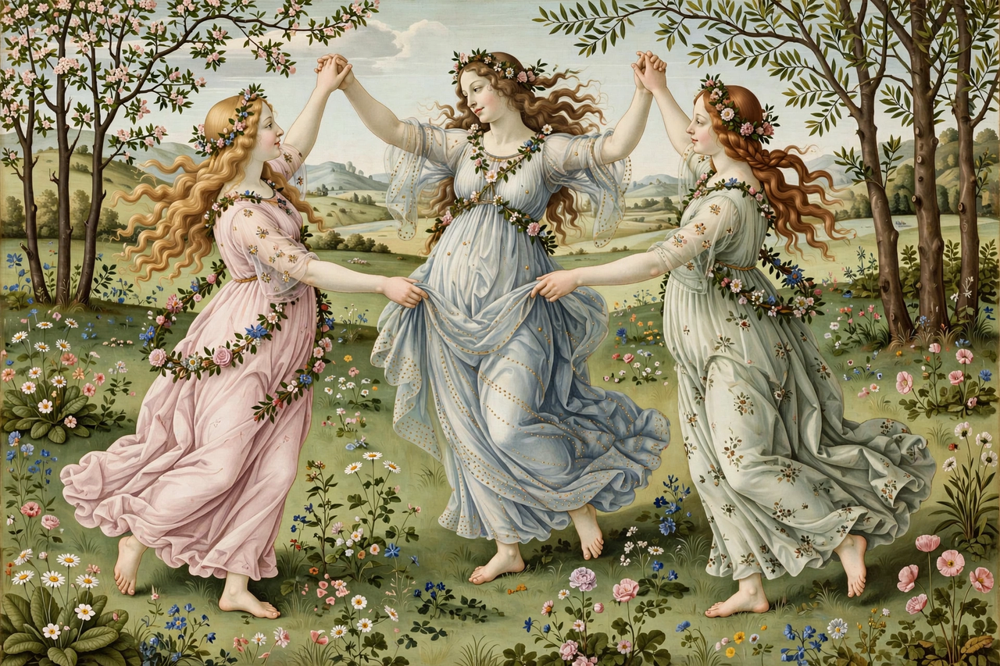

| Parents | Zeus and Eurynome |
|---|---|
| Members | Aglaea, Euphrosyne, Thalia |
| Domains | Charm, beauty, grace, festivity |
| Roman equivalent | Gratiae (the Three Graces) |
| Cult centre | Orchomenos (Boeotia) |

In Greek mythology, the Charites (Greek: Χάριτες, from charis, "grace, kindness") — known in Roman mythology as the Gratiae or the Three Graces — are goddesses of charm, beauty, nature, fertility and festivity. Hesiod names three: Aglaea (splendour), Euphrosyne (joy) and Thalia (good cheer), daughters of Zeus and the Oceanid Eurynome.
The Charites attended Aphrodite and the other gods, presided over banquets, dances and festivals, and embodied the gracious reciprocity that bound Greek society. Their oldest cult was at Orchomenos in Boeotia, where they were worshipped as three stones said to have fallen from heaven; the festival of the Charitesia included musical contests and dancing. Regional traditions varied the number and names — Sparta honoured two, Kleta and Phaenna, Athens Auxo and Hegemone.
Early images show the Graces clothed and dancing hand in hand; from the Hellenistic period they were conventionally depicted nude, in a linked group of three, one facing away. The motif was revived in the Renaissance, most famously in Botticelli's Primavera, and in neoclassical sculpture by Canova. The goddess of one of the Graces, Aglaea, was said to be the wife of Hephaestus.
See also: Psyche · Botticelli · Twelve Olympians